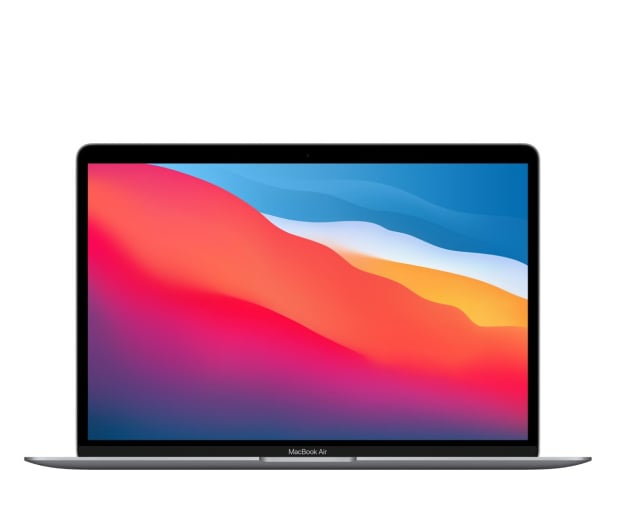

Apple MacBook Air M1
Cena: 4549,00 zł

Procesor:
Apple M1 (8 rdzeni, ARM)
Pamięć RAM:
8 GB (pamięć zunifikowana)
Maksymalna obsługiwana ilość pamięci RAM:
8 GB
Liczba gniazd pamięci (ogółem / wolne):
0/0 (pamięć wlutowana)
Dyski SSD PCIe (wlutowane):
256 GB
Wbudowany napęd optyczny:
Nie
Dotykowy ekran:
Nie
Typ ekranu:
Błyszczący, LED, IPS, Retina
Przekątna ekranu:
13,3"
Rozdzielczość ekranu:
2560 x 1600 (WQXGA)
Karta graficzna:
Apple M1 [7 rdzeni]
Pamięć karty graficznej:
Pamięć współdzielona
Dźwięk:
Wbudowane głośniki stereo
Wbudowane trzy mikrofony
Kamera internetowa:
FaceTime HD
1.0 Mpix
Łączność:
Wi-Fi 6
Moduł Bluetooth
Złącza:
USB Typu-C (z Thunderbolt™ 3) - 2 szt.
Wyjście słuchawkowe/głośnikowe - 1 szt.
Kolor dominujący:
Szary
Czytnik linii papilarnych:
Tak
Czujniki:
Czujnik światła
Podświetlana klawiatura:
Tak
Kolor podświetlenia klawiatury:
Biały
Zabezpieczenia:
Szyfrowanie TPM
Czytnik Touch ID
Obudowa i wykonanie:
Aluminiowa pokrywa matrycy
Aluminiowe wnętrze laptopa
Aluminiowa obudowa
System operacyjny:
macOS Big Sur
Dołączone oprogramowanie:
Partycja recovery (opcja przywrócenia systemu z dysku)
Dodatkowe informacje:
Wielodotykowy gładzik Force Touch
Rok premiery:
2020
Wysokość:
16,1 mm
Szerokość:
304 mm
Głębokość:
212 mm
Waga:
1,29 kg
Dołączone akcesoria:
Zasilacz
Kabel USB Typu-C
Rodzaj gwarancji:
Standardowa